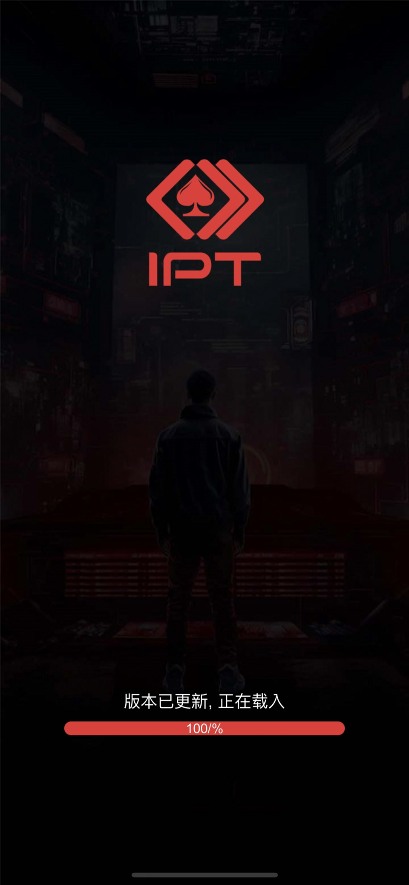

赛事服务
GMServer、GMServant、gameserver 与 gameroot 等 C++ 服务组件。

Project Scope
页面聚焦德州扑克赛事、德州比赛源码、SNG 单桌赛、MTT 多桌锦标赛、报名服务和赛事牌桌。仓库主要提供服务端及流程参考，并非一键上线的完整发行包。
GMServer、GMServant、gameserver 与 gameroot 等 C++ 服务组件。
入桌、离桌、掉线、重连、开局和消息处理相关代码。
服务接口和编译后的 Protobuf 资源，协议版本仍需核对。
DBOperator 数据组件，数据库结构和事务需要部署前验证。


